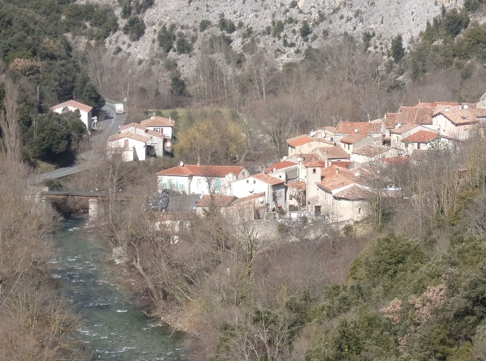
Petit village de la haute vallée de l'Aude (11), traversé par ce fleuve parfois impétueux.
Fleuve qui est à l'origine de l'emplacement actuel du village, en contre bas du col de St Martin.
En effet, la forêt des Fanges, autrefois forêt royale, couronne les crêtes au dessus de notre vallée ; ses sapins noirs géants ont servi au mâtage de nombreux bateaux de la marine française.
L'exploitation du bois nécessitait un port :
- pour la mise à l'eau des grumes, phase de durcissement du bois,
- et leur transport rapide vers les grandes cités.
Saint Martin était stratégiquement placé, pour descendre facilement les troncs, puis pour que des radeliers (ou carrassiers) puissent conduire ensuite ces arbres abattus jusqu'à Quillan, de l'autre côté des gorges de la Pierre-Lys.
Cliquer sur la partie de St martin que vous souhaitez découvrir
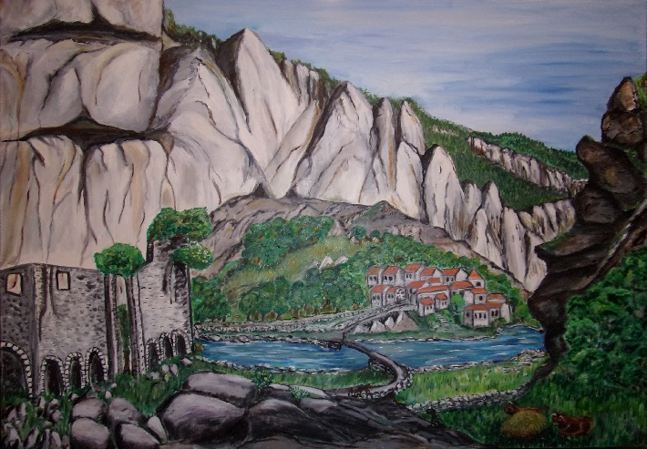
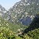
Présentation et sentier de Planèses, juillet 2022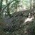
Le chemin du débardage du bois St Martin Lys, septembre 2022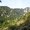
Les vignes de la Pierre-Lys St Martin Lys, septembre 2022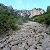
Le chemin perdu du Trou du Curé à Belvianes, "l'os de la Pierre-Lys", juin 2023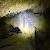
Aude, la Pierre-lys, balade souterraine, 24 juin 2024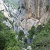
Aude : Défilé de Pierrelys, haut en couleurs, 28 juillet 2024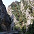
Aude, le Disparu de la Pierrelys, 28 juillet 2024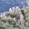
Aude : La Pierrelys entre Diable et Curé, 01 avril 2025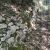
Aude, (la Pierrelys) : l'ancêtre de la route, 14 juillet 2025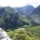
Aude : de Saint Martin Lys au Col d' Agajos, 31 juillet 2025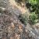
St Martin / Quirbajou (Aude) : le "chemin des danseurs", 21 août 2025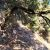
St Martin / Quirbajou (Aude) : le "chemin des danseurs"...fin, 28 août 2025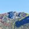
Aude, Cavirac, les "échelles" de la Pierrelys, 05 avril 2026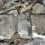
Aude (11) : le funiculaire d' Axat, 20 novembre 2025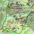
Aude, Axat, fantaisies cartographiques en chemin, 11 mai 2026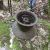
Aude, Axat, les portes ouvertes d'un insolite musée, 24 mai 2026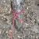
Aude, Axat, "le mur des suppositions", 26 juillet 2026Dépôt de Gerbe devant le monument aux morts de Saint Martin de la guerre de 14/18 et de 1945,
suivi d'un apéritif dinatoire offert par la municipalité qui a réuni beaucoup des habitants de Saint-Martin, pour un moment très convivial
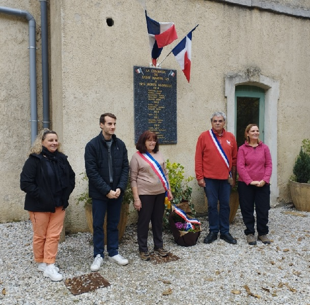
Le conseil municipal lors du dépôt de gerbe devant le monument aux morts
Ce vendredi 16 octobre, le Syndicat Mixte du Train Rouge a convié les participants du Comité de pilotage de l'étude de programmation paysagère globale autour de la friche de la #garedesaintmartinlys à une présentation immersive du rendu de ce travail lancé en mai 2025.
novembre 2026
27/10/2026
21/10/2026 et 27/10/2026
17/10/2026
12/10/2026
02 et 12/10/2026
Cliquer ici pour un historique complet du site
Les cartes proposées dans le sites sont issues de cartes.gouv.fr/explorer-les-cartes
Les références par rapport aux documents en liens ou aux photos sont directement indiquées dans les pages concernées.
Je remercie Paul Teulière pour ses superbes photos qui permettent d'agrémenter le site, ainsi qu'Amandine et Silas Teulière qui ont fourni quelques clichés.
Pour m'envoyer un mail, cliquer sur l'icône ci-dessous (ou copier l'adresse e-mail en faisant clic droit sur l'icône)
Il est aussi possible de rajouter un commentaire en passant par mon blog sur word-press